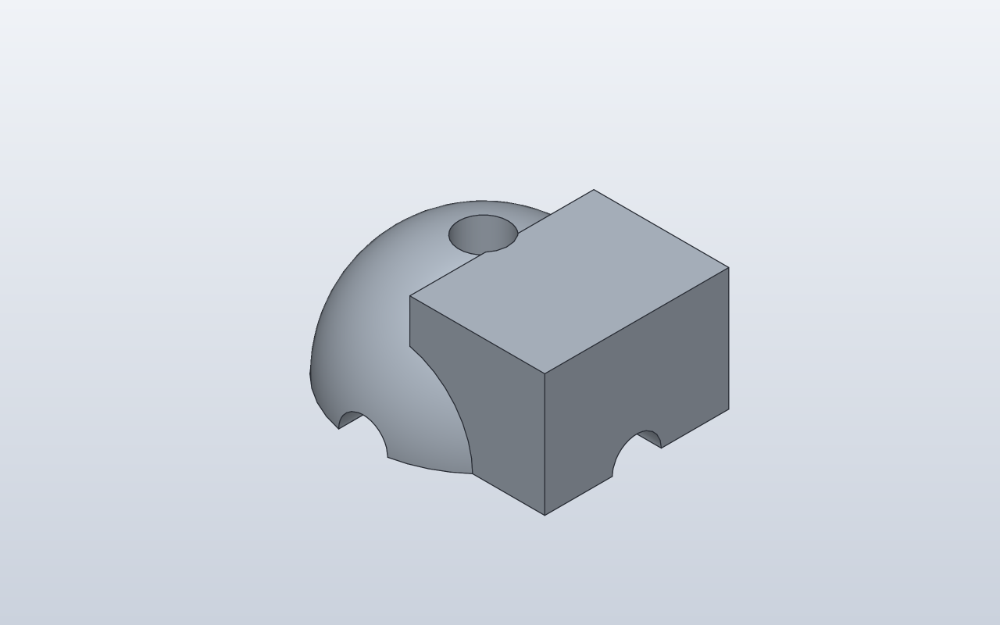

Forge qualification case · Q1–Q6 native verified
Primitive CSG and orientation
Qualify direct primitive/CSG modelling independently of feature-history geometry: Sphere and Box union, translated primitives, three-axis Cylinder.orient() cuts and intersection.

1. Forge contract
Public API
Sphere(); Box(...).move(...); Cylinder(...).orient(X, Y, Z); + / - / &
Internal Forge model
A Shape CSG tree rooted in Sphere so Forge deliberately selects the direct CSG compiler instead of the feature-history Box compiler.
SolidCraft lowering
solid.sphere(new), solid.box(join), three centered solid.cylinder(cut) commands for X/Y/Z, then solid.box(intersect).
2. Native verification
Expected result
SolidCraft accepts the complete CSG command path, produces one valid clipped body and evaluates the native timeline without errors.
Parametric mutation
No saved-design mutation in this case; it isolates primitive CSG lowering and orientation. Parametric edits are covered by dedicated Q5 cases.
Evidence

Generated native relationship/command path
solid.sphere
solid.box
solid.cylinder
solid.cylinder
solid.cylinder
solid.boxReference models
These comparisons clarify concepts; Forge does not promise API compatibility with them.
- OpenSCAD: Closest to ordinary union()/difference()/intersection() with translate()/rotate() around primitives.
- PythonSCAD: Useful comparison for Python objects and operators while Forge still delegates all geometry to SolidCraft.
Fixture source
"""Core CSG qualification: primitives, transforms and Boolean operations."""
class PrimitiveCsg:
def build(self):
# Rooting the model in Sphere deliberately selects the direct CSG
# compiler rather than the feature-history Box compiler.
body = Sphere(20)
# Translation stays an explicit primitive placement.
body = body + Box(30, 30, 20).move(x=18, z=10)
# One semantic cylinder creates three centered native cutters.
cross_bore = Cylinder(d=8, h=60).orient(X, Y, Z)
body = body - cross_bore
# Keep intersection in the same small qualification fixture.
clip = Box(50, 50, 30).move(z=15)
return body & clip
PrimitiveCsg()